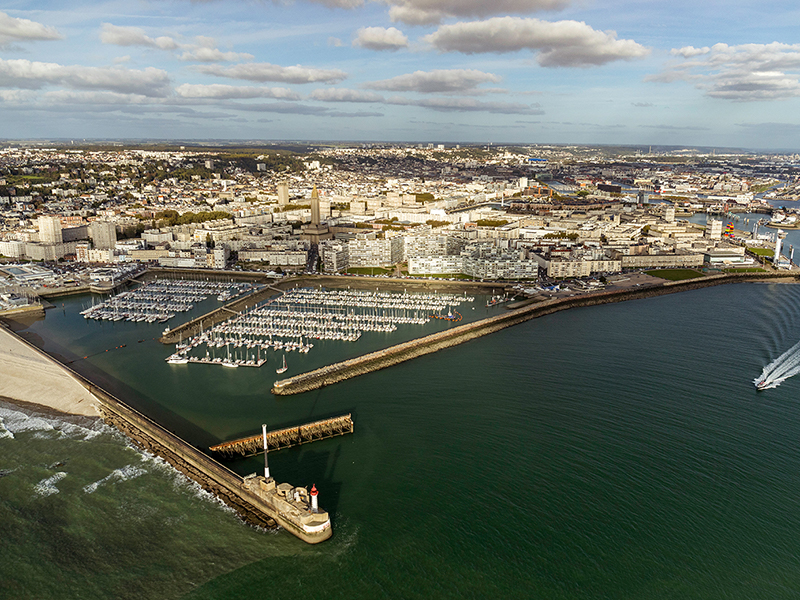
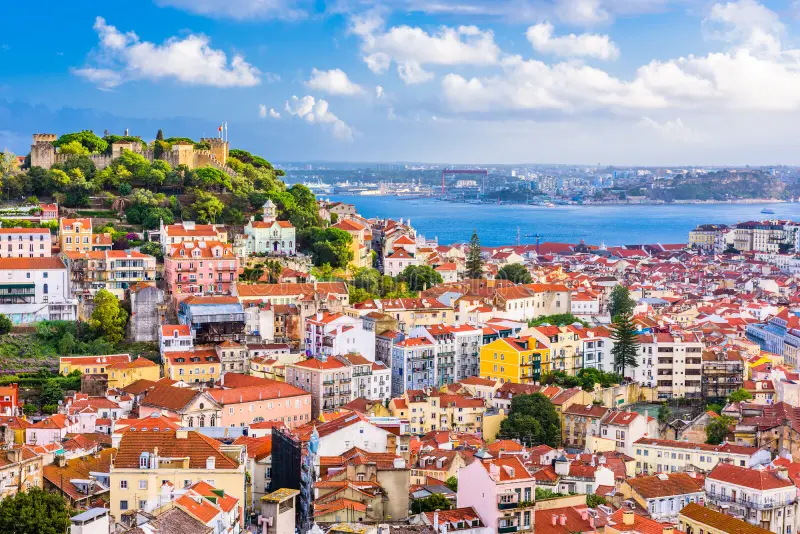
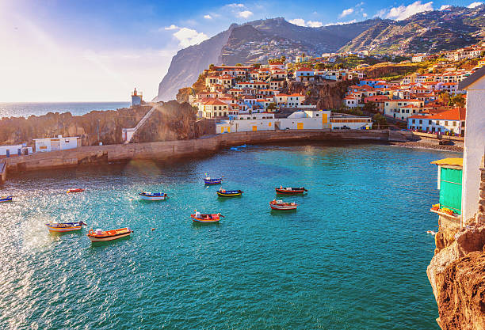
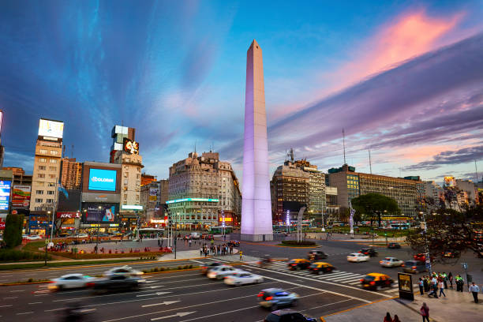
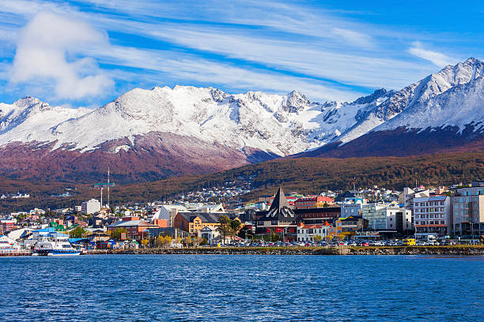
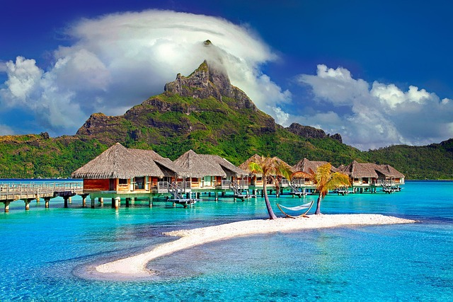
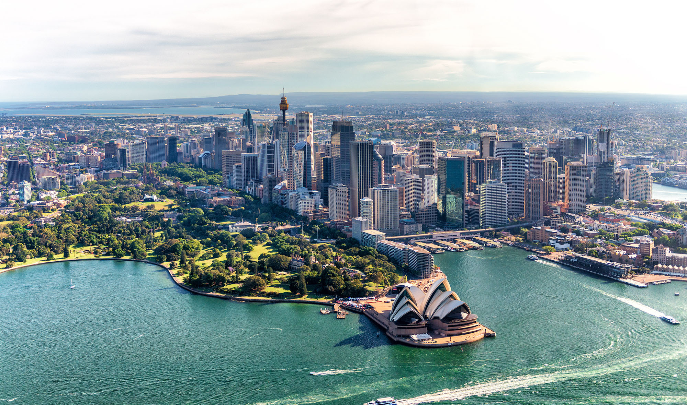
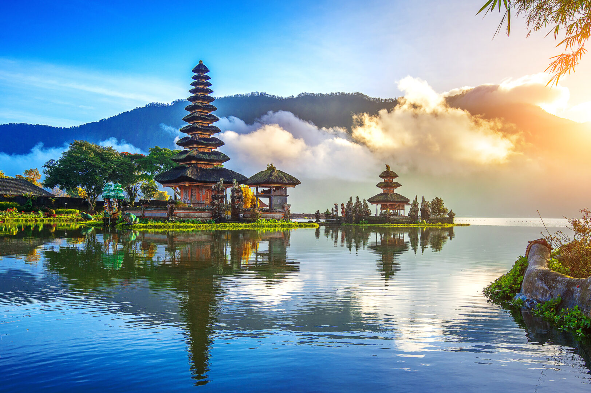
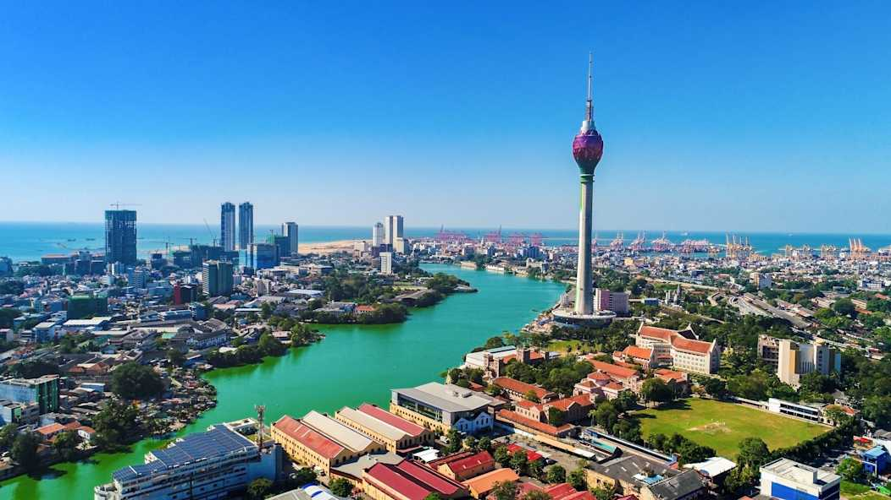
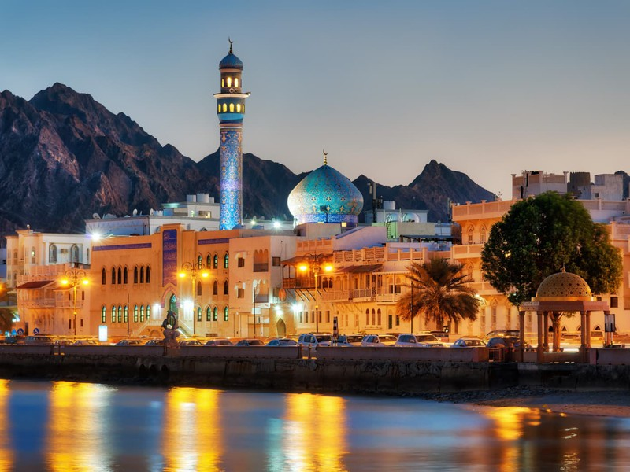

Une croisière plutôt axée vers la découvert des îles et des cultures sud latino-américaine. Basé sur une année de voyage (350 jour)

Le Havre (France) - 3 jours 🇫🇷 La croisière commence dans la ville historique du Havre, située sur la côte normande, qui a su allier modernité et héritage. Le port du Havre est un lieu animé et dynamique, idéal pour débuter l’aventure. Profitez de son architecture contemporaine, inscrite au patrimoine mondial de l’UNESCO, et découvrez les musées et les promenades en bord de mer. Un départ élégant et un prélude parfait pour un tour du monde incroyable. 🏙️🌊

Lisbonne (Portugal) - 4 jours 🇵🇹 En arrivant à Lisbonne, la capitale du Portugal, vous serez immédiatement séduit par son ambiance chaleureuse et son patrimoine historique. Promenez-vous dans les quartiers traditionnels de l'Alfama et de Baixa, découvrez la majestueuse Tour de Belém et laissez-vous envoûter par les paysages sur le fleuve Tage. Goûtez à la gastronomie locale, notamment les célèbres pastéis de nata, et admirez les tramways jaunes caractéristiques de la ville. Une escale où histoire et modernité se rencontrent dans un cadre pittoresque. 🌆🏰

Madère (Portugal) - 5 jours 🇵🇹 Le voyage se poursuit vers Madère, un archipel d'une beauté saisissante. Surnommée "l'île aux fleurs", Madère vous offre des panoramas spectaculaires entre montagnes verdoyantes, falaises abruptes et plages volcaniques. Explorez les jardins luxuriants et les forêts de lauriers, classées au patrimoine mondial de l’UNESCO, ou aventurez-vous sur les levadas pour une balade inoubliable. La douceur de son climat et la diversité de ses paysages en font une destination de rêve pour les amoureux de la nature. 🌳🏞️

Buenos Aires (Argentine) - 6 jours 🇦🇷 Arrivée en Argentine à Buenos Aires, une ville vibrante, riche en culture et en histoire. La capitale du pays est un véritable centre de la culture latino-américaine avec ses cafés bohèmes, ses restaurants animés et ses célèbres spectacles de tango. Découvrez le quartier historique de San Telmo, flânez dans le quartier chic de la Recoleta, et profitez de la vie nocturne animée. Buenos Aires est également réputée pour sa cuisine, notamment ses célèbres parrillas (grillades argentines). 🍷💃

Ushuaïa (Argentine) - 7 jours 🇦🇷 Ushuaïa, la ville la plus australe du monde, est une destination à couper le souffle. Perchée entre la mer et les montagnes de la Patagonie, cette ville offre des paysages d'une rare beauté. Profitez de visites en bateau pour observer les glaciers et la faune locale, notamment les manchots et les otaries. Ushuaïa est aussi un excellent point de départ pour explorer le parc national de la Terre de Feu, avec ses forêts, ses lacs et ses sentiers de randonnée. Une escale idéale pour les amoureux de la nature et de l’aventure. ❄️🐧
.jpg)
Îles Galápagos (Équateur) - 6 jours 🇪🇨 L’archipel des Galápagos est un lieu unique au monde. C’est ici que Charles Darwin a développé sa théorie de l’évolution, en observant la faune et la flore incroyablement diversifiées. Les îles sont un véritable sanctuaire naturel, où les animaux vivent en toute liberté. Vous aurez l’opportunité de découvrir des tortues géantes, des iguanes marins, des oiseaux rares et bien plus encore. Plongez dans les eaux cristallines pour observer les coraux et les poissons colorés, et partez en randonnée à travers ces paysages volcaniques époustouflants. 🐢🐠

Tahiti (Polynésie Française) - 8 jours 🌴 Tahiti, perle de la Polynésie, est le paradis tropical par excellence. Les plages de sable blanc et les lagons turquoise bordent cette île idyllique, offrant un cadre parfait pour la détente et les activités nautiques. Explorez les montagnes verdoyantes, plongez dans les eaux cristallines, ou partez à la découverte des villages polynésiens et de leurs coutumes. Profitez également des magnifiques couchers de soleil, qui feront de chaque soirée un moment inoubliable. 🌅🏝️

Sydney (Australie) - 7 jours 🇦🇺 Sydney est une ville incontournable, où se mêlent culture, nature et modernité. Découvrez l’emblématique Opéra de Sydney, flânez sur le Harbour Bridge et détendez-vous sur les plages célèbres comme Bondi et Manly. Profitez de l’ambiance cosmopolite de cette ville dynamique, en explorant ses quartiers animés, ses restaurants raffinés et ses magasins de créateurs. Sydney est également un excellent point de départ pour découvrir la beauté naturelle de la côte est de l’Australie, avec ses forêts tropicales et ses parcs nationaux. 🌉🌊

Bali (Indonésie) - 6 jours 🇮🇩 Bali, l'île des dieux, est un véritable sanctuaire de culture et de spiritualité. Visitez ses temples emblématiques comme Tanah Lot et le temple d’Uluwatu, plongez dans la culture locale en assistant à des cérémonies traditionnelles, et explorez les rizières en terrasses de Tegalalang. Profitez de ses plages de sable doré, plongez dans ses eaux cristallines, ou partez à la découverte de ses montagnes volcaniques. Bali est l’endroit idéal pour allier détente et aventure. 🏯🌾

Colombo (Sri Lanka) - 5 jours 🇱🇰 Colombo, capitale du Sri Lanka, est une ville fascinante qui mêle tradition et modernité. Explorez ses marchés animés, ses temples bouddhistes comme le Gangaramaya, et découvrez sa riche histoire coloniale. Profitez de ses plages dorées, visitez les jardins botaniques royaux et laissez-vous charmer par l’accueil chaleureux de ses habitants. Cette escale vous permettra d’immerger dans la culture sri-lankaise tout en profitant de la beauté naturelle de l’île. 🌴🏖️

Dubaï (Émirats Arabes Unis) - 6 jours 🇦🇪 Dubaï est un véritable oasis de luxe au cœur du désert. Cette ville futuriste offre une expérience unique avec ses gratte-ciels vertigineux, son architecture moderne et ses centres commerciaux géants. Montez au sommet du Burj Khalifa, faites du shopping dans des malls de luxe, ou plongez dans un safari dans le désert. Dubaï est également célèbre pour ses plages magnifiques, ses hôtels 5 étoiles et sa vie nocturne effervescente. Un lieu où luxe et traditions se rencontrent. 🏙️🌵

Muscat (Oman) - 4 jours 🇴🇲 Muscat, capitale d’Oman, est une ville pleine de charme et de sérénité. Entourée de montagnes et de plages, elle offre une atmosphère paisible et un mélange fascinant d’influences arabes et perses. Visitez ses forts historiques, ses marchés traditionnels, et découvrez ses plages tranquilles. Muscat est également un excellent point de départ pour explorer le désert et les montagnes alentours, offrant ainsi une parfaite combinaison de détente et d’aventure. 🏜️🏰
Retour : Le Havre (France) - 3 jours 🇫🇷 Après un an d’aventures et de découvertes autour du monde, retour au Havre pour clôturer cette croisière épique. Profitez des dernières heures à bord pour partager vos souvenirs et revivre ces moments inoubliables. C'est le moment de réfléchir à la beauté du monde, avant de redescendre à terre, avec l’esprit plein de nouvelles histoires à raconter. ⛴️🌍
Confort abordable pour les voyageurs souhaitant explorer sans se ruiner.
29 999€Une vue imprenable sur l'océan pour un séjour relaxant.
39 999€Un espace spacieux avec balcon privé et services exclusifs.
59 999€Expérience VIP avec accès premium et prestations haut de gamme.
99 999€